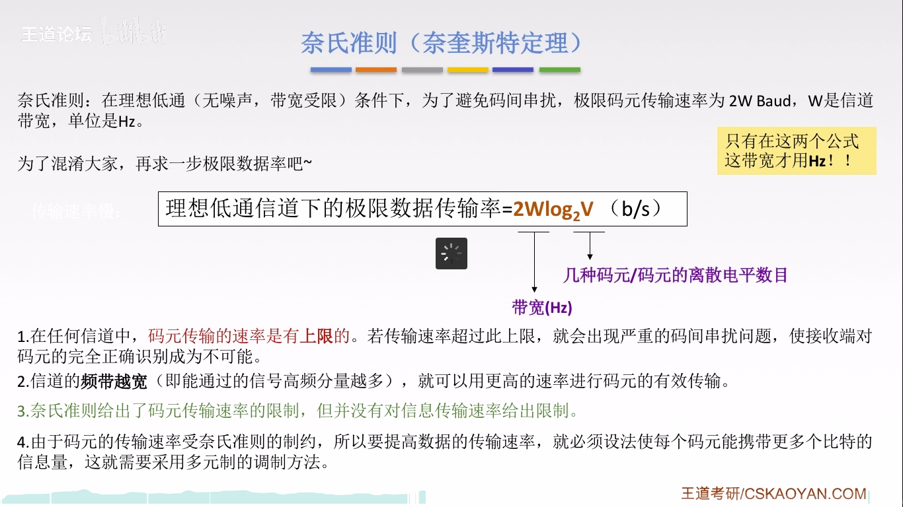
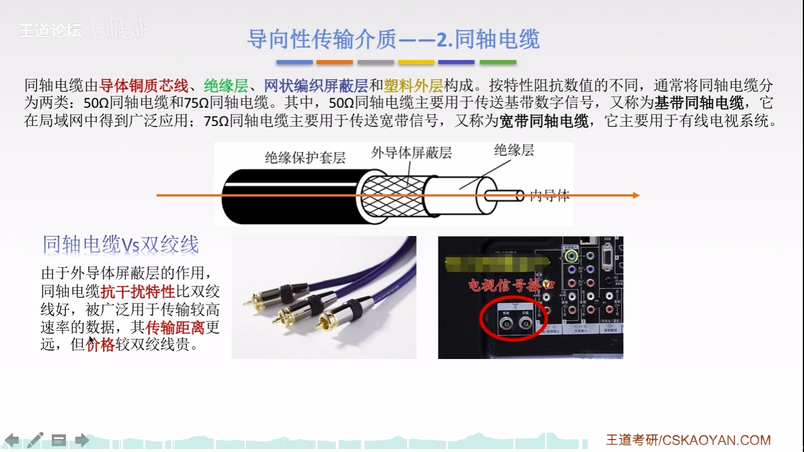

数据通信的相关术语
通信的目的：传送消息
数据：传送信息的实体
信号：数据的电气/电磁的表现，是数据在传输过程中的存在形式
数字信号：代表消息的参数取值是离散的
模拟信号：代表消息的参数取值时连续的
信源：产生和发送数据的源头
信宿：接收数据的终点
信道：信号传输的媒介。一般用来表示向某一个方向传送信息的介质，因此一条通信线路往往包含一条发送信道和一条接收信道
按照传输信号，信道可分为：模拟信道(传送模拟信号)和数字信道(传送数字信号)
按照传输介质，信道可分为：无线信道和有线信道
3种通信方式(按照通信双方信息的交互方式)
单工通信：只有一个方向的通信而没有反方向的交互，仅需要一条信道
半双工通信：通信的双方都可以发送或接收信息，但任何一方都不能同时发送和接收，需要两条信道
全双工通信：通信双方可以同时发送和接收信息，也需要两条信道
两种数据传输方式
串行传输：速度慢，费用低，适合远距离
并行传输：速度快，费用高，适合近距离
码元
码元是指用一个固定时长的信号波形(数字脉冲)，代表不同离散数值的基本波形，是数字通信中数字信号的计量单位，这个时长内的信号称为k进制码元，而该时长称为码元宽度。当码元的离散状态有M个时(M大于2)，此时码元称为M进制码元。
1码元可以携带多个比特的信息量。例如，在使用二进制编码时，只有两种不同的码元，一种代表0状态，一中代表1状态。
速率，波特，带宽
速率也叫数据率，是指数据的传输速率，表示单位时间内传输的数据量。可以用码元传输速率和信息传输速率表示。
(1) 码元传输速率：别名码元速率，波形速率，调制速率，符号速率等，它表示单位时间内数字通信系统所传输的码元个数(也可称为脉冲个数或信号变化的次数)，单位是
波特(Baud)。
1波特表示数字通信系统每秒传输一个码元。这里的码元可以是多进制的，也可以是二进制的，单码元速率与进制数无关
(2)信息传输速率：别名信息速率，比特率等，表示单位时间内数字通信系统传输的二进制码元个数(即比特数)，单位是比特/秒(b/s)
两者关系：若一个码元携带n bit的信息量，则M Baud的码元传输速率所对应的信息传输速率为M*n bit/s
一言以蔽之：码元传输速率表示1s传输多少个码元,信息传输速率表示1s传输多少个比特。.
计算机网络中，带宽用来表示网络的通信线路传送数据的能力，通常是指单位时间内从网络中的某一点到另一点所能通过的“最高数据率”，可理解为网络设备所支持的最高速度。单位是”比特每秒”，b/s，kb/s，Mb/s，Gb/s
看一道题
基带信号与宽带信号(信道上传输的信号)
基带信号：将数字1和0直接用两种不同的电压表示，再传送到数字信道上去传输(基带传输)。来自信源的信号，比如计算机发出的代表各种文字或图像的数据信号都属于基带信号。基带信号就是发出的
直接表达了要传输的信息的信号,比如说话的声音。
宽带信号：将基带信号进行调制后形成的频分复用模拟信号，再传送到模拟信道上去传输(宽带传输)。把基带信号经过载波调制后，把信号的频率范围搬移到较高的频段以便在信道中传输(即仅在一段频率范围内能够通过信道)。
在传输距离较近时，计算机网络采用基带传输方式(近距离衰减小，从而信号内容不易发生变化)；
在传输距离较远时，计算机网络采用宽带传输方式(远距离衰减大，即使信号变化大也能最后过滤出来基带信号)；
栗子： 设备投屏 –>基带传输；
编码与调制
编码： 数据–>数字信号
调制： 数据–>模拟信号
数字数据，经数字发送器，变为数字信号，此为调制
数字数据，经调制器，变为模拟信号，此为调制
模拟数据，经PCM编码器，变为数字信号，此为编码
模拟数据，经放大器调制器，变为模拟信号，此为调制
数字数据编码为数字信号
非归零编码（NRZ）
曼彻斯特编码
差分曼彻斯特编码
归零编码（RZ）
反向不归零编码（NRZI）
4B/5B编码
数字数据调制为模拟信号
模拟数据编码为数字信号
模拟数据调制为模拟信号
失真
影响失真程度的因素
码元传输速率（正相关），信号传输距离（正相关），噪声干扰（正相关），传输媒体质量（负相关）
失真的一种现象
奈氏准则(奈奎斯特定理)

香农定理
奈氏与香农对比
物理层传输介质

物理层设备